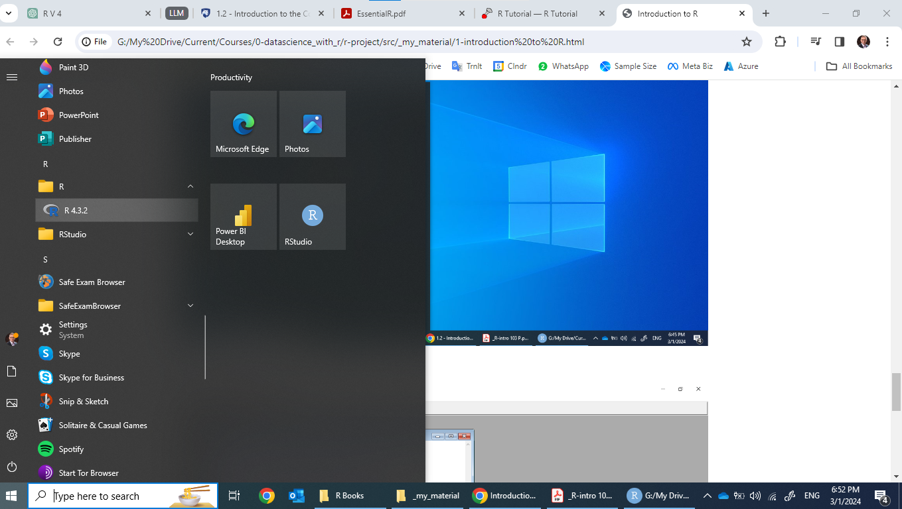
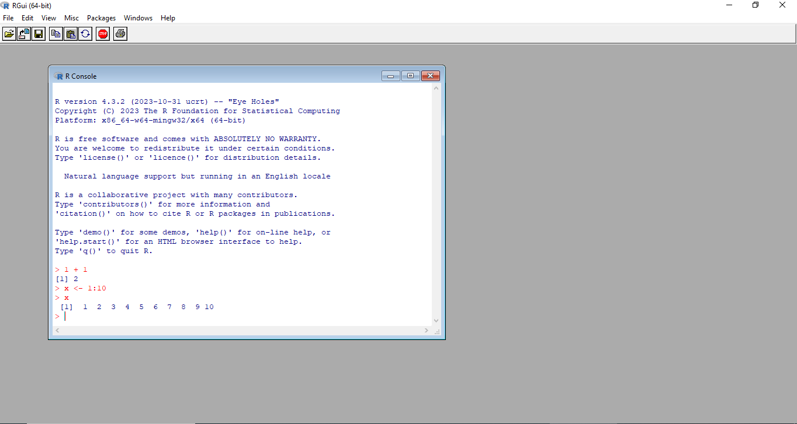
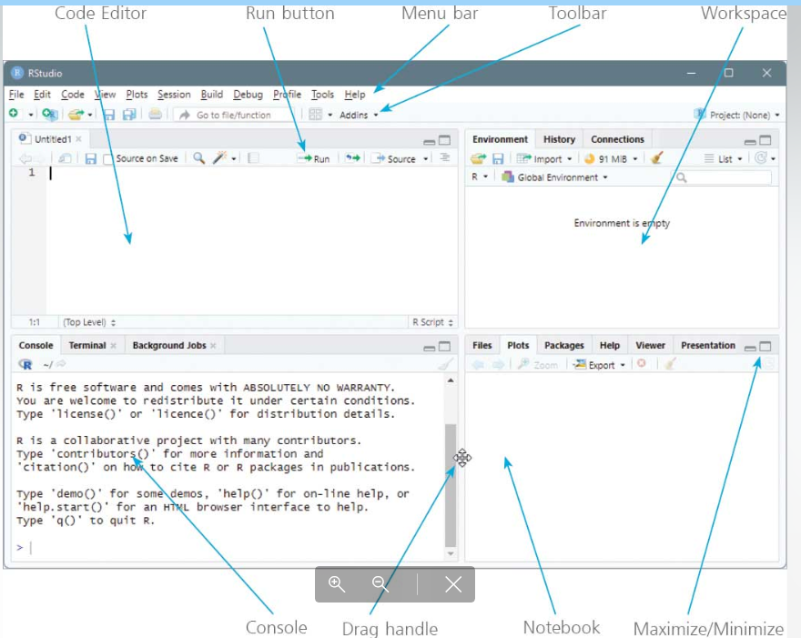
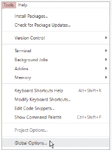
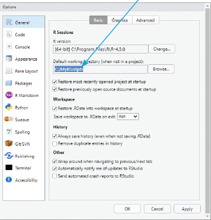
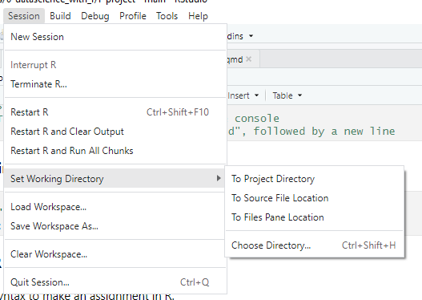

Module 1: R and RStudio
Lesson 1 | Getting started
R is a powerful language and environment for statistical computing and graphics.
It is widely used among statisticians and data analysts for developing statistical software and data analysis.
R is open source and freely available under the GNU General Public License, making it an accessible tool for data analysis, statistical modeling, and graphical representation.
History of R
R was created by Ross Ihaka and Robert Gentleman at the University of Auckland, New Zealand, in the early 1990s.
It was conceived as an implementation of the S programming language combined with lexical scoping semantics inspired by Scheme.
The name ‘R’ was partly derived from the first letters of the creators’ first names, as well as a play on the name of S.
R’s official release to the public came in 1995, and since then, it has evolved with contributions from many statisticians and programmers worldwide.
Main Features of R
- Comprehensive Statistical Analysis Tool: R provides a wide array of statistical techniques including linear and nonlinear modeling, classical statistical tests, time-series analysis, classification, clustering, and more.
- Graphical Capabilities: R excels in creating quality plots and graphs, offering a vast number of techniques to visualize data, from basic charts to complex graphics.
- Extensible: One of R’s most powerful features is its package system, which allows users to create and share sets of functions, data, and compiled code. The Comprehensive R Archive Network (CRAN) hosts thousands of packages covering a wide range of statistical, graphical, and data manipulation techniques.
- Programming Features: R includes conditional statements, loops, user-defined recursive functions, and input and output facilities.
- Data Handling and Storage: R handles various data types, including vectors, matrices, arrays, data frames, and lists. It provides facilities for data manipulation, calculation, and storage.
- Community and Support: R benefits from a large and active community. Users can seek help and share knowledge through forums, mailing lists, blogs, and user-contributed documentation.
Advantages of R
- Open Source and Free: Being open-source, R is freely available, and users can inspect, modify, and distribute the source code.
- Cross-Platform: R runs on various operating systems including Windows, MacOS, and Linux.
- Active Community: The vibrant community supports users at all levels, contributing packages, tools, and documentation.
- Integration: R can be integrated with other programming languages (like C, C++, and Python), enabling the use of R in diverse environments and applications.
Data Science and R
- Versatile Tool for Data Manipulation: R provides powerful libraries (dplyr, tidyr) for data cleaning, transformation, and preparation.
- Advanced Statistical Analysis: With its origins in statistics, R excels at performing complex statistical computations essential for data science.
- Data Visualization: R’s ggplot2 and other plotting packages offer superior data visualization capabilities, allowing for the creation of professional and informative graphics.
Career Opportunities with R
Careers that utilize R span across various industries, leveraging its powerful capabilities in data analysis, statistical modeling, visualization, and more. Here’s a list of careers where proficiency in R is highly valued:
Data Analyst: Analyzes data to help businesses make informed decisions. Uses R for data cleaning, preparation, and visualization.
Data Scientist: Uses statistical models and machine learning algorithms to analyze complex datasets. R is crucial for data manipulation, analysis, and predictive modeling.
Quantitative Analyst: Works primarily in finance, using R to develop complex models that inform investment strategies, risk management, and financial forecasting.
Statistician: Applies mathematical and statistical techniques to solve real-world problems. Uses R for statistical testing, data analysis, and experiment design.
Bioinformatician/Biostatistician: Uses R in the analysis of biological data, such as genetic sequencing, drug development, and epidemiological studies.
Market Research Analyst: Analyzes market conditions to examine potential sales of a product or service. Uses R for survey analysis, consumer behavior studies, and trend forecasting.
Machine Learning Engineer: Develops algorithms that enable computers to learn from and make decisions based on data. R is used for prototyping and developing statistical models.
Econometrician: Specializes in econometrics, using R to analyze economic data, forecast economic trends, and develop economic models.
Environmental Scientist: Uses R for analyzing environmental data, modeling environmental processes, and evaluating the impacts of environmental policies.
Public Health Analyst: Utilizes R in the analysis of health data to inform public health policy, program decisions, and research on health trends.
Educational Researcher: Employs R for analyzing educational data, evaluating the effectiveness of educational programs, and researching teaching methods and outcomes.
Actuary: Uses R for analyzing risk in the insurance and finance industries, helping companies set policies’ prices and provisions.
Operations Research Analyst: Applies mathematical and analytical methods to help organizations investigate complex issues, identify and solve problems, and make better decisions. R is used for optimization, simulation, and decision analysis.
Sports Analyst: Analyzes sports data to improve team performance, develop game strategies, and evaluate player performance. R is used for statistical analysis and predictive modeling in sports analytics.
Clinical Researcher: Utilizes R in the design, execution, and analysis of clinical trials, including statistical analysis to interpret study results.
These careers demonstrate the broad applicability of R across different sectors, emphasizing the importance of data-driven decision-making in today’s world. Proficiency in R can open doors to a wide range of job opportunities where data analysis and statistical modeling are crucial.
Installing R: A Step-by-Step Guide
Installing R is straightforward, whether you’re using Windows, macOS, or a Linux distribution. Below is a step-by-step guide to help you through the process, which you can use to instruct your course attendees.
For Windows Users
- Download R:
- Visit the Comprehensive R Archive Network (CRAN) at https://cran.r-project.org/.
- Click on “Download R for Windows”.
- Go to “install R for the first time” and click on “Download R x.x.x for Windows” (x.x.x denotes the latest version).
- Install R:
- Run the downloaded
.exefile and follow the installation instructions. - Choose your preferred installation directory.
- Select components to install (you can keep the default settings).
- Choose the start menu folder (or accept the default), and decide whether to create a desktop icon or Quick Launch shortcut.
- Review the installation options and click ‘Finish’ once the installation is complete.
- Run the downloaded
For macOS Users
- Download R:
- Visit CRAN at https://cran.r-project.org/.
- Click on “Download R for (Mac) OS X”.
- Select the latest version of R and download the
.pkgfile suitable for your version of macOS.
- Install R:
- Open the downloaded
.pkgfile. - Follow the installation instructions provided by the installer.
- If you encounter a warning about software from an unidentified developer, go to your system preferences under “Security & Privacy” and allow the R installation.
- Open the downloaded
For Linux Users
- The installation process for R on Linux varies depending on the distribution. Below is a general guide for Debian/Ubuntu-based systems. For other distributions, refer to the official documentation or community forums for specific instructions.
Open Terminal.
Add CRAN to your repository list (optional, for the latest versions):
- For Ubuntu, add a CRAN repository by typing
sudo add-apt-repository 'deb https://<my.favorite.cran.mirror>/bin/linux/ubuntu <ubuntu_version_codename>/'in the terminal. Replace<my.favorite.cran.mirror>with your preferred CRAN mirror and<ubuntu_version_codename>with your Ubuntu version codename (e.g., bionic, focal).
- For Ubuntu, add a CRAN repository by typing
Update package lists:
- Run
sudo apt update.
- Run
Install R:
- Install R by running
sudo apt install r-base.
- Install R by running
Additional Steps for All Users
- Install RStudio (Optional):
- For a more user-friendly interface, download and install RStudio, a popular IDE for R, from https://www.rstudio.com/products/rstudio/download/.
- Choose the appropriate installer for your operating system, download it, and run the installation file, following the on-screen instructions.
- Verify Installation:
- Open R or RStudio and type
sessionInfo()in the console. This command will display your R session information, confirming that R is installed correctly.
- Open R or RStudio and type
Presenting the R Console
Click on start menu and scroll to find R folder

Then open the R Console

Presenting the R Studio

Settings - Working Directory
Select General in the left panel of the “Options” dialog, then enter the path to the directory you created into the Default working directory box

Set the default working directory to your preferred folder.

We can also change the working directory from the sessions menu.

References
Gen AI.
In addition, we will be using the following sources for the next sections.
https://online.stat.psu.edu/stat484/
https://online.stat.psu.edu/statprogram/sites/statprogram/files/EssentialR.pdf
https://www.cyclismo.org/tutorial/R/index.html
R for Data Analysis in easy steps R Programming Essentials - Mike McGrath